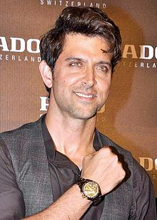

Hrithik Roshan
“True power and true happiness are when you use your success to make others around you feel even more significant.”
Hrithik Roshan (English: /ˈrɪtɪk ˈrɒʃən/, born 10 January 1974) is an Indian actor who works in Hindi films. He has portrayed a variety of characters and is known for his dancing skills. One of the highest-paid actors in India, he has won many awards, including six Filmfares, four for Best Actor and one each for Best Debut and Best Actor (Critics). Starting in 2012, he appeared several times in Forbes India's Celebrity 100 based on his income and popularity.
In his early 20s, he was diagnosed with scoliosis that would not allow him to dance or perform stunts. Initially devastated, he eventually decided to become an actor anyway. Around a year after the diagnosis, he took a chance by jogging on a beach when he was caught in a downpour. There was no pain, and becoming more confident, he was able to increase his pace with no adverse effects. Roshan sees this day as "the turning point of life."
Hrithik Roshan
Born
Hrithik Roshan Nagrath 10 January 1974 (age 47) Bombay, Maharashtra, India
Occupation
Actor
Years active
1980–present
Fitness Talks
During the nationwide lockdown, Bollywood actor Hrithik Roshan has been giving major fitness goals to his fans as he is actively sharing videos of his routine workout. The actor has been indulging in different exercises to remain fit and has been encouraging fans to keep themselves healthy, especially while staying at home during the quarantine. On Friday, he shared another secret of his fit body when he revealed that he has been on a fast for 23 hours.
What does fitness mean to you?
It simply means being happy. Feeling the joy of being functionally strong and agile,
to be able to discover new skills with your body, being able to breathe deep and feel
the life force and peace and excitement of just being - to be so much a part of nature
that the mere thought of chemical crutches like cigarettes and drugs automatically seem
unnatural and unwanted.
What is your fitness mantra?
Explore, find out, and be curious about how you would feel if you could truly be the best version of yourself!
What is the brand philosophy of HRX and how does it aim to revolutionise the fitness scenario?
It is really simple, 'True happiness is simply being the best version of yourself.' Fashion
and Fitness form the two most important pillars of HRX and Technology is the obvious underlying layer
for a contemporary and relevant brand. HRX wishes to democratize fitness and make it available to anyone who
aspires to live a happy, fit and fulfilling life.